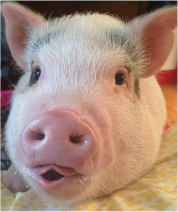

Pig
The cognitive ability of swine is a perennial topic for armchair scientists. They are smarter than dogs, people will tell you, smarter than dolphins, smarter than 3-year-olds.
- Average Life: 18-22 years
- Average Weight: 300-600 lbs
- Average Height: 1.8-4.1 ft.
- Closest species: hippos
A pig is any of the animals in the genus Sus, within the even-toed ungulate family Suidae. Pigs include the domestic pig and its ancestor, the common Eurasian wild boar (Sus scrofa), along with other species; related creatures outside the genus include the peccary, the babirusa, and the warthog. Pigs, like all suids, are native to the Eurasian and African continents. Juvenile pigs are known as piglets.[1] Pigs are highly social and intelligent animals[2]